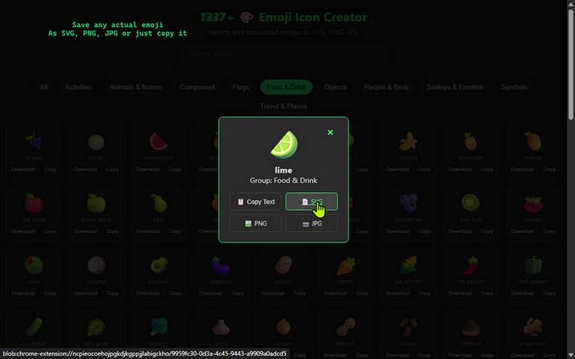
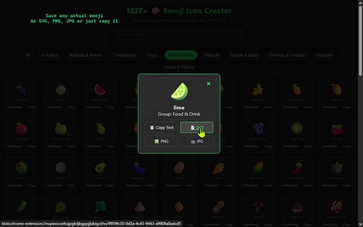

1337+Helper is a lightweight browser extension that instantly converts time formats and measurement units on any webpage. With just one click, transform AM/PM times to 24-hour format, convert imperial units to metric, and vice versa. Plus, it includes a built-in emoji icon creator tool!
⚡ 1337+Helper
Universal Converter Extension for Chrome & Edge
✨ What is 1337+Helper?
🔒 Privacy Policy
1337+Helper Browser Extension
Last Updated: August 2025
What We Collect
Nothing. We don't collect, store, or transmit any personal data.
How It Works
- ✅ Time & Unit Conversions: 100% local processing in your browser
- ✅ No cookies, no tracking, no analytics
- ✅ No user accounts required
- ✅ Open source code - verify it yourself
Network Requests
The extension makes only ONE type of external request:
- Emoji data: Fetches emoji list from OpenMoji's public GitHub repository (only when you open the Emoji Creator tool)
- External links: Opens 1337.plus or Telegram only when you click those specific buttons
Permissions
- activeTab: Reads page content only when you click convert
- scripting: Modifies page only to show conversions
Contact
TL;DR: We don't want your data. The extension just converts stuff locally.
📸 Screenshots
 

🚀 Features
🕠Time Format Conversion
Convert between 12-hour and 24-hour time formats instantly
📠Unit Conversion
Convert between imperial and metric measurements - length, weight, temperature
🨠Emoji Icon Creator
Browse 3500+ emojis, search by name, and download as PNG, SVG, or JPG icons
📋 Supported Formats
Time: 6AM, 6:30 PM, 14:30, 23:45
Length: inches ↔ cm, feet ↔ m, miles ↔ km
Weight: pounds ↔ kg, ounces ↔ g
Temperature: °F ↔ °C
Length: inches ↔ cm, feet ↔ m, miles ↔ km
Weight: pounds ↔ kg, ounces ↔ g
Temperature: °F ↔ °C
🧪 Test the Extension
Want to see 1337+Helper in action? Visit our test page with sample data:
Open Test Page →🔧 How to Use
- Click the 1337+Helper icon in your browser toolbar
- Choose your conversion type
- Watch as the page content transforms instantly
- Use the utility buttons for quick access to tools